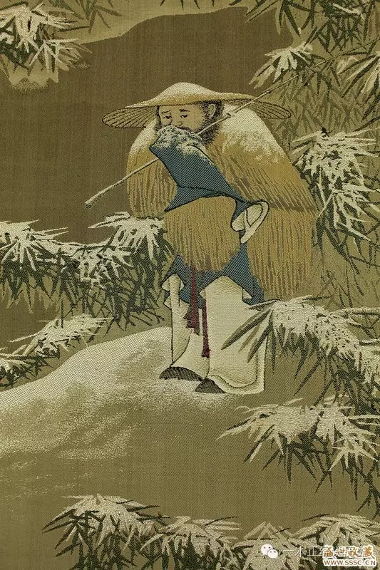
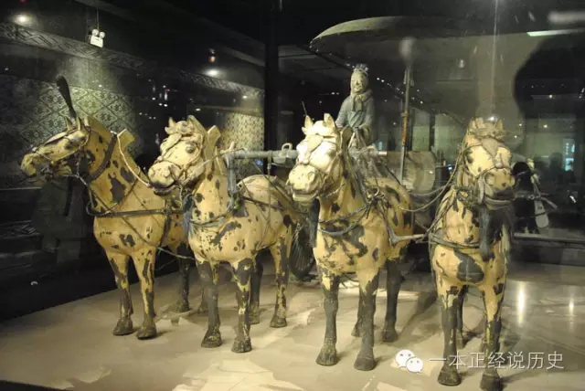
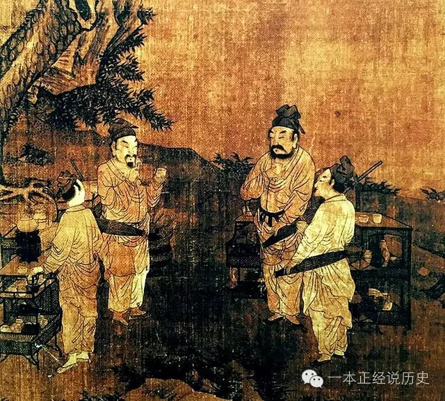
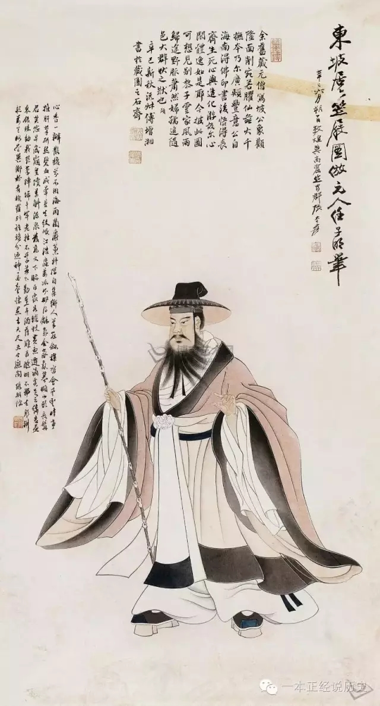

涨姿势 | 古代要是下这么大雨，人们出行怎么办？
 3,081
3,081
这两天，全国上下都在下雨，而且都是大暴雨，出门在外打个伞根本管不了事儿，因为雨是在太大，有的地方甚至下冰雹。这要是在古代下这么大的雨，古人出行要怎么办？
中国古人如何防雨
蓑衣
蓑衣，最初是用草编织而成的挡雨器具。我国在上古时期，人们为了抵挡风雨的侵扰。起初只能用野草裹住身子，以遮雨水，久而久之形成了蓑衣《诗经·小雅·无羊》：“尔牧来思，何蓑何笠”，就记录了当时人们穿蓑衣的情况。“蓑笠，备雨服。”说明是充当雨具之用的。春秋战国时代，百姓在下雨天，通常是身着这种草衣来从事劳作的。蓑和笠的关系，如同今日雨衣和雨帽的关系，所不同的是“笠”的制作原料是竹子，而不是草。而且“笠”晴雨两用，既可避风雨，也可防烈日酷暑。
蓑草的表皮较光滑，本身又呈空心状，所以用来制雨衣，雨水不易渗透。其为贱物，轻易可得，在很长时期内，不分尊卑，外出遇雨，都穿这种蓑衣。随着时代进步，人们又发现了多种可用作雨衣的材料，但蓑衣并没有被淘汰，尤以农夫、渔人所用为多，历代诗文中有不少描写。我们最熟悉的，应该是那首：“孤舟蓑笠翁，独钓寒江雪”。

五代《雪渔图》中戴斗笠、穿蓑衣的人
比蓑衣进一步的雨衣，是用丝绢一类纺织品涂上油后做成的，称“油衣”、“油帔”。《晋书·桓玄传》：“(刘)裕至蒋山，使赢弱贯油帔登山，分张旗帜，数道并前。”
除蓑革、油绢外，古代雨衣还有用粗麻、棕丝等材料制成的。棕丝是棕榈树皮上的一种纤维，经加工整理，也可编织成雨衣，俗谓“棕衣”。唐韦应物《寄庐山棕衣居士》诗：“兀兀山行无处归，山中猛虎识棕衣。”与此类似的材料，还有油葵叶，也非常适宜制作雨衣。清李调元《南越笔记》中就有详细记载：“油葵生阳江恩平大山中，树如蒲葵，叶稍柔，亦日柔葵，取以作蓑，御雨耐久。”这种雨衣仍以农夫、渔人所着为多。
明代后，雨衣的制作日益考究，所用材料也有多种。宫廷内臣所穿雨衣，据刘若愚《明宫史》记：“用玉色深蓝官绿杭触或好绢，油为之，先年亦有蚕茧纸为之，今无矣。有斗钵式者，有道袍式加褂者。御前大臣值穿红之日，有红雨衣、彩画蟒龙方补为贴里式者。”贵族男女的雨衣，则用一种柔软而不渗水的高级玉草编织而成，取名为“玉针蓑”。
《红楼梦》中，贵公子贾宝玉就穿这种雨衣。第45回：“只见宝玉头上戴着大箬笠，身上披着蓑衣，黛玉不觉笑道：‘那里来的这么个渔翁?’……黛玉又看那蓑衣斗笠不是寻常市卖的，十分细致轻巧，因说道：‘是什么草编的?”’
斗笠则是用竹篾、箭竹叶为原料，编织而成，有尖顶和圆顶两种形制。讲究的以竹青细篾加藤片扎顶滚边，竹叶夹一层油纸或者荷叶，笠面再涂上桐油。有些地方的斗笠，由上下两层竹编菱形网眼组成，中间夹以竹叶、油纸。“或大或小，皆顶隆而口圆，可芘雨蔽日，以为蓑之配也。”(《国语》)斗笠，又名箬笠。“楚谓竹皮日箬”有的斗笠，以葵叶铺陈笠盖，因而称之为葵笠。有的则以笋壳夹于竹篾中。
雨伞
我国古代另一种常用的雨具就是伞。“伞”，亦作“躇”，《正字通》说：“伞，御雨蔽日，可以卷舒者。”先秦时，伞又称为“簦”。我国远在夏、商、周三代已发明了雨伞，据《事物纪原》：“《六韬》日：‘天雨不张盖幔’，周初事也。《通俗文。》日：‘张帛避雨，谓之鳝’，盖即雨伞之用，三代已有也。”所谓“张帛避雨”，即是用布帛制作的雨伞。
1980年发现的秦始皇陵彩绘铜车马上带有一柄伞。拉动这个伞柄的机关，就可以随心倾斜以遮蔽不同角度射来的阳光。此外，拉动机关还可旋转伞柄或取下伞柄用作一把利矛，而伞也就成了一个巨大的盾。此时的伞多是统治者出门车辇上的装饰。

秦始皇陵彩绘铜车马
元魏之时的伞是“便于步行骑马”的油纸伞。油纸伞在这一时期的出现，是由于汉代已经发明了纸，人们开始用廉价的纸来代替昂贵的丝帛，并在纸上涂以油脂或桐油，使之经久耐用。由于物美价廉、经济实用，油纸伞得以广泛地流传和使用。据此，我们也可以认为，中国历史上真正具有防雨效果的伞，是到南北朝时才有的。文献记载也对这一时期人们用伞的情况作了描述，如唐初李延寿所纂的《南史》载：“(王籍)弥忽忽不乐，乃至徒行市道，不择交游，有时途中见相识，辄以笠伞覆面。”
隋唐五代时期，伞的使用就比较普遍了，除了防雨还用来遮阳。由于伞的使用普遍，当时制伞、售伞也达到了一定的水平。宋初陶毂《清异录》卷下就记载道：“江南周则，少贱，以造雨伞为业。”
宋代，伞已经成为社会上的大众用品了。除官员外，平民百姓也可使用。那时人们出门，行李中的物品，伞是必不可少的。行人带伞，或防雨，或遮阳。刘松年《斗茶图》四人中有三人随身携带着伞，说明人们出行时，伞是随带物品中必不可少的。
宋代伞的种类很多，根据吴自牧《梦梁录》一书中的记载，南宋都城临安(今浙江杭州)的制伞业，俨然已是全国的生产中心，有大小黄罗伞、青凉伞、红绿小伞、方伞、大伞等诸多品种可供顾客挑选。当时，以丝绸制作的伞估计还占据着主流的地位。

刘松年《 斗茶图》局部
虽然宋代伞的使用非常普遍，但其仍有严格的使用规定。叶梦得《石林燕语》记载：
“京城士人旧通用青凉伞，祥符五年始诏惟亲王得用之，余悉禁。六年，中书枢密院亦许用，然每车驾行幸，扈从皆撤去，既张伞而席帽仍旧，故谓之重戴。余从官遇出京城门，如上池赐宴之类，门外皆张伞，然须却帽。”从这条文献记载来看，过去京城中的士人都是通行使用青绢凉伞。到大中祥符五年(1012)九月，朝廷规定青绢凉伞惟许亲王、宗室使用，其余阶层的人士禁止使用青绢凉伞。
明清时期伞的品种很多，同时对伞的使用亦有严格的限制。据《古今事物考》所云：“我明卤簿有紫方伞、红方伞、曲柄红绣伞、黄绣伞、黄罗绣九龙伞、直柄黄绣伞、红绣伞、青红黄白黑五色销金伞、黄罗销金九龙伞、黄油绢销金雨伞。又文武官一品至四品，俱用黑色茶褐罗表红绢里三檐；五品用青罗表红绢里两檐，六品至九品俱用青绢表红绢里两檐雨伞。”由此可以看出，从形状来分有方伞、直柄伞和曲柄伞，根据颜色又可分出紫、红、黄等不同种类，根据制作材料又可分罗绣伞、油绢伞等种类。不同的等级使用不同的伞，而清代则规定，庶民不得用罗绢凉伞。
木屐
除了遮雨器物外，雨天在外行走，还要顾及地下的潮湿泥泞，于是就有了雨鞋。先秦时有一种双层底的鞋，称“舄”，底层上腊。当时建筑多是泥地，贵族行礼久立，恐湿气侵下，“故复其下使干腊也”(《释名·释衣服》)。可以推想，下雨贵族们可能就用它当雨鞋。对一般劳动人民来说，则是用草编的鞋。古诗云：“蒯菅柔韧自编成，不换仍呼不借名，长向绿蓑衣底著，雨行偏称野夫情。”
先秦时还有一种形似今天日本人所穿的木屐的鞋，底下有双齿，称“屐”，据说是用以“践泥”的，后来也成为雨鞋。它的穿着很方便，只需在布鞋外一套，便可出行。考究一点的，还要匕蜡，称“蜡屐”。
今天一个人有十几双乃至几十双鞋都很正常，但古人不一样，他们对鞋非常珍惜，一到下雨天就把鞋搁家里了，基本上就等于光着脚，多大的雨都不怕。但是又怕扎脚，该怎么办呢?人们就发明了木屐，防硌、防扎、不怕雨。
那么木屐到底有几个齿呢?我们今天不使用木屐了，日本人尽管还用木屐，但是经过了改良，也不是最原始的状态了。原始的木屐有两个齿。相传这种鞋是谢灵运发明的，是为了登山用的，所以它有一个名字叫“谢公屐”。

脚穿谢公屐的《东坡先生笠屐图》
在登山的时候，把前齿卸去，这样登山就变得非常容易；下山的时候，又把后跟卸去。这种木屐在中国历史上流传了很久，也使用了很久。古时候的生产力比较低下，古人发明了这么简易的鞋，可以避雨，还可以登山，可见中国人非常聪明。
此外，明清时还有一种钉鞋，鞋底施钉，鞋统、鞋面涂敷桐油，雨天套于常鞋之外穿着。
至于贵族女子，出行有车代步，她们的雨鞋，装饰性的成分较大，《红楼梦》中，大观园的姑娘们雪天出游，有的着羊皮小靴。有的着鹿皮小靴，争艳斗奇，即是一例。
参考资料：
《中国古代的伞文化》陶学锋
《漫步历史文化长廊 经典珍藏版》 王子木
《汉字与服饰文化 修订版》 冯盈之
来源：一本正经说历史